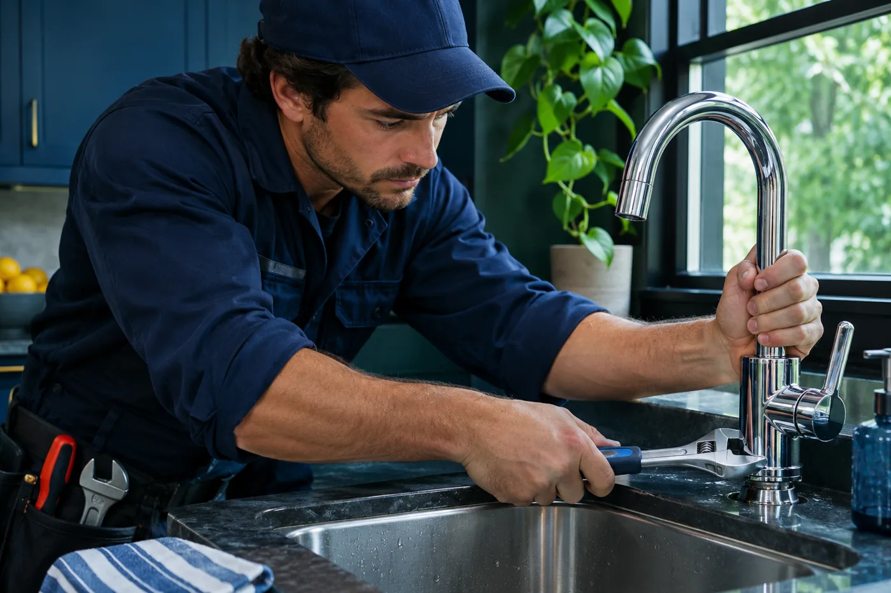
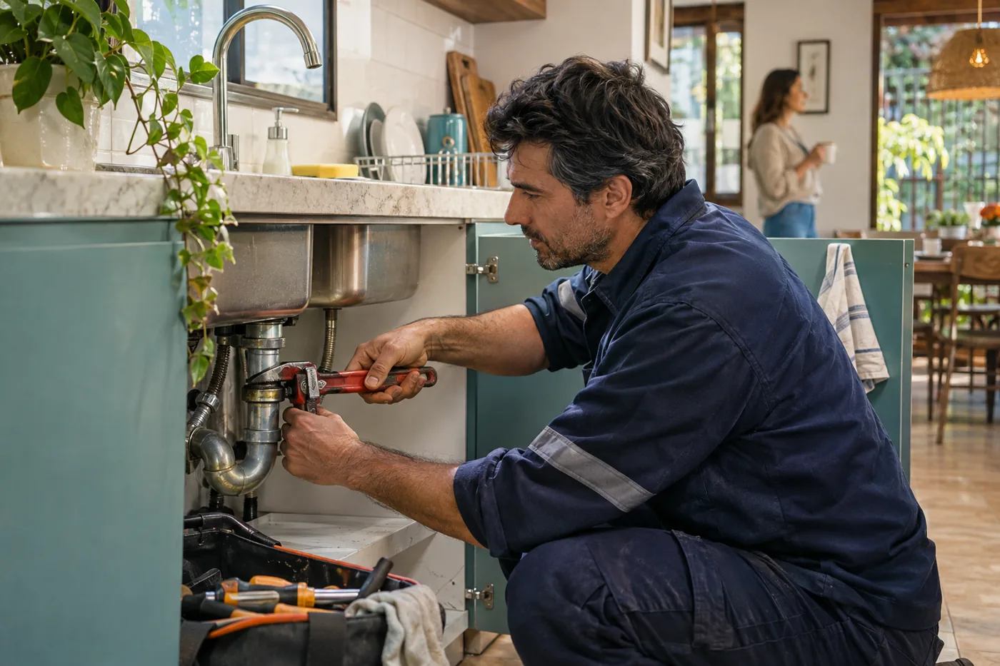
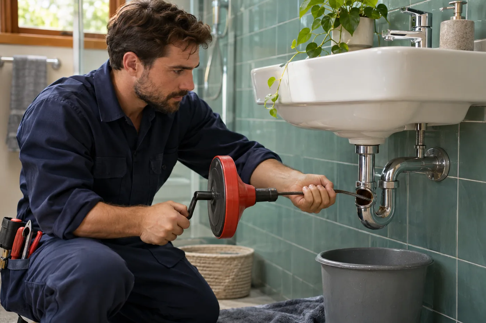
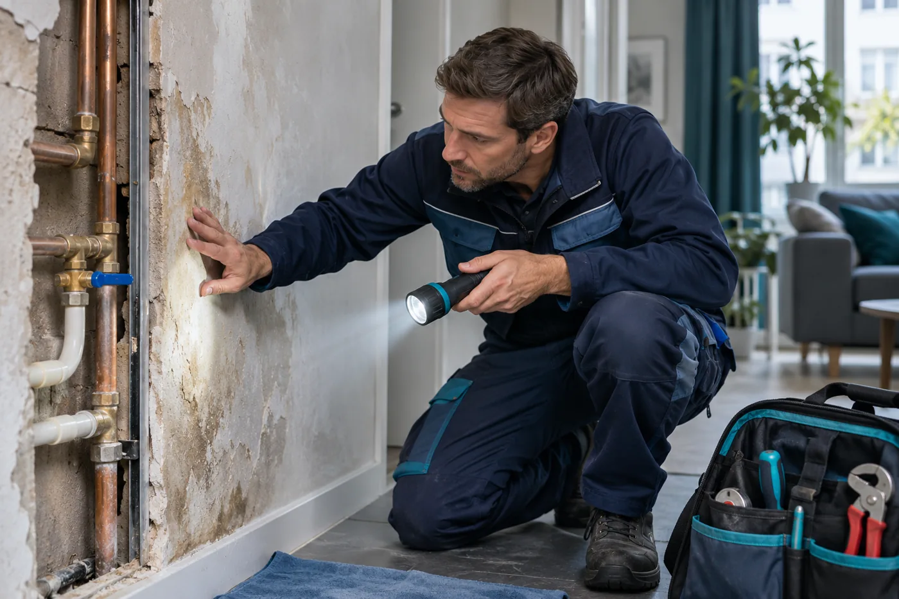
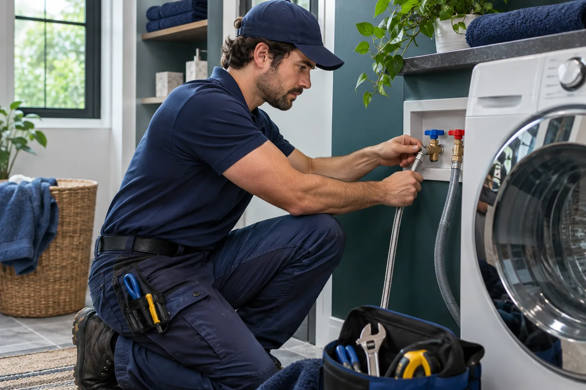
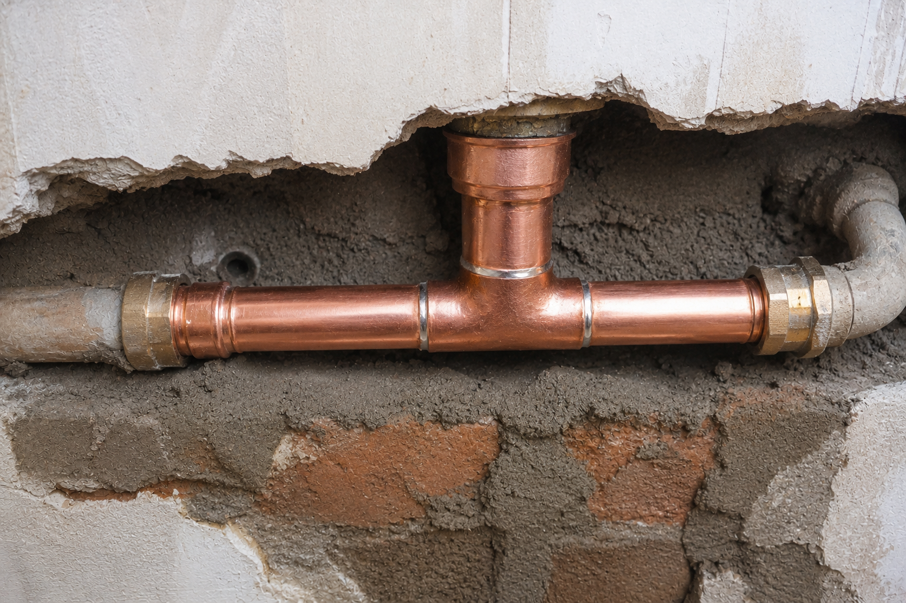
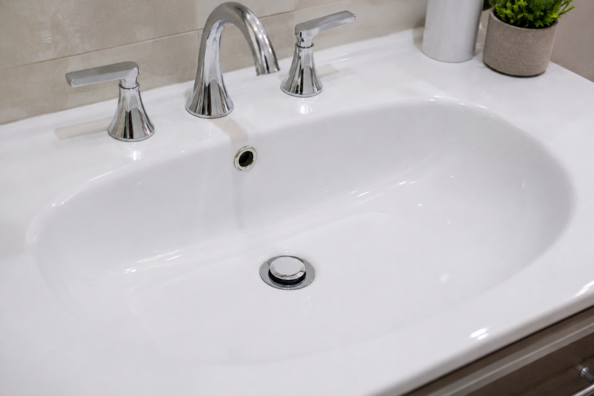
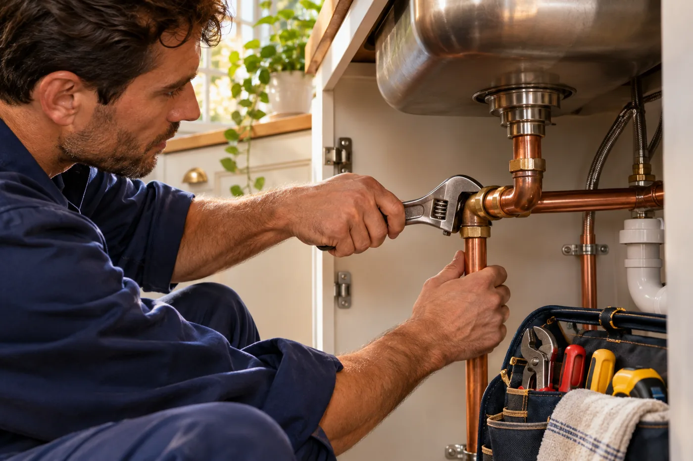
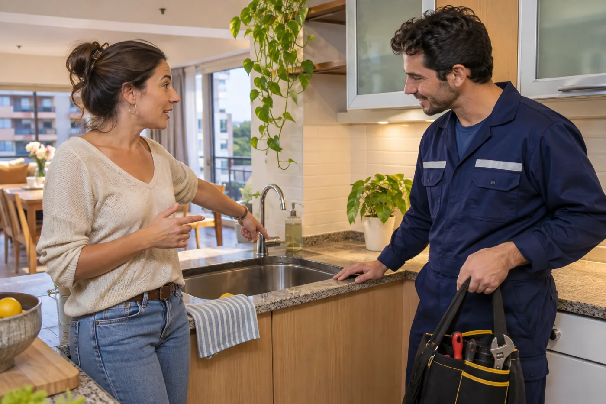

01Pérdidas y griferías
Canillas, llaves de paso, flexibles y conexiones que gotean o no cierran bien.
Consultar reparación
Plomería para tu hogar
Una buena solución empieza escuchando
Contacto directo+54 9 11 6796-7633
Desde una canilla que pierde hasta una instalación nueva: contanos qué pasa y demos el primer paso para resolverlo.
Una atención cercana, con cada paso explicado con claridad.
Primero, entender el agua
Escuchar, revisar y explicar: tres pasos para que sepas qué necesita tu instalación y cómo seguir.
Un recorrido sin vueltas
Describí la pérdida, el ruido, el olor, el atasco o la instalación que querés resolver.
Fotos, ubicación y estado visible ayudan a entender qué conviene observar en el lugar.
El profesional confirma tarea, materiales, tiempos y condiciones antes de empezar.
Elegí por necesidad

01Canillas, llaves de paso, flexibles y conexiones que gotean o no cierran bien.
Consultar reparación
02Cocina, baño y lavadero: cuando el agua baja lento, vuelve o directamente no drena.
Describir el atasco
03Roturas, filtraciones y señales visibles que necesitan revisión de la instalación.
Contar el caso
04Termotanques, lavarropas, artefactos y conexiones para una puesta en marcha ordenada.
Consultar instalaciónUna primera orientación


Próximo paso orientativo
Si podés, cerrá la llave de paso cercana y evitá manipular la instalación hasta que la revisen.
Describir el problema en contactoEl oficio se ve en los detalles
Un vistazo al trabajo, desde la primera consulta hasta los detalles de la instalación.

Una consulta, un primer paso
Una foto, tu zona y unas palabras sobre lo que pasa nos ayudan a entender tu consulta y coordinar los próximos pasos.
Contanos tu caso
Antes de consultar
Contá qué ocurre, desde cuándo, en qué ambiente y si podés seguir usando la instalación. Las fotos también pueden aportar contexto.
No necesariamente. Puede haber más de una causa; por eso conviene revisar el origen antes de definir una reparación.
Esta demo no publica precios. El valor depende del diagnóstico, los materiales y el alcance que confirme el profesional.
Consultá la disponibilidad y las condiciones directamente con el profesional.
Siguiente paso
Dejanos contexto para que la consulta sea más útil. Este formulario es demostrativo y no envía datos a un negocio real.
Contacto directo
Esta demo necesita el canal verificado del profesional para abrir WhatsApp. Mientras tanto, podés revisar cómo abordamos el trabajo.
Consultar por WhatsApp